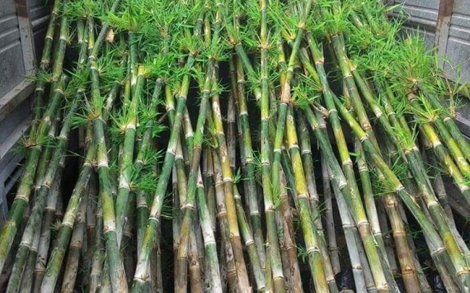
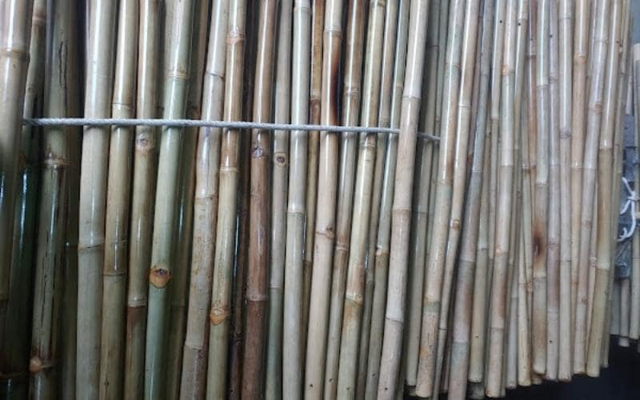
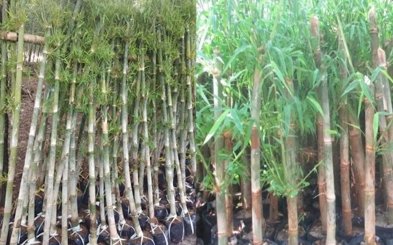
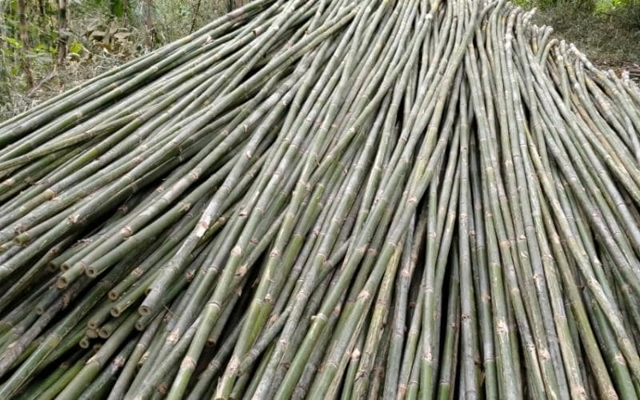

Kỹ thuật trồng cây tầm vông đúng cách không phải ai cũng biết. Nếu đây là thông tin quý khách đang tìm kiếm thì đừng bỏ qua bài viết này nhé.
Cách chọn giống cây tầm vông tốt
Muốn thực hiện kỹ thuật trồng cây tầm vông thì trước tiên bạn phải chú trọng để việc chọn cây giống chính xác như sau:
Giống cây tầm vông mỡ
Cây tầm vông có ưu điểm là lớn nhanh và khỏe. Thân cây to với đường kính từ 4 đến 7 cm, cao 14 m. Cây thuộc giống này cho năng suất khá cao, có thời vụ sinh trưởng kéo dài 3-4 năm và có thể đưa vào sử dụng. Thân cây màu xanh, phân nhánh nhiều, xung quanh bụi có 20-30 hàng cây, đường kính bụi từ 5-6 m, thích hợp trồng ở vùng đất trũng, đất phù sa ẩm.
Giống tầm vông nứa
Giống cây tầm vông nữa có kích thước cây nhỏ hơn giống cây tầm vông mỡ. Là giống được trồng nhiều ở vùng núi có lượng mưa thấp.
Cây tầm vông có khả năng chịu hạn cao, thích nghi tốt với môi trường núi và có tỷ lệ sống sót cao trong tự nhiên. Đường kính thân cây từ 2-4cm, cao 6-10 m, thân nhỏ, ít cành, số cây trong bụi 20-40, đường kính bụi là 2-4 cm. 3-5 mét.
Chọn đúng giống cây là một trong những kỹ thuật trồng cây tầm vông hiệu quả, quý khách cần lưu ý.
Kỹ thuật trồng cây tầm vông

Có hai phương pháp nhân giống cây tầm vông đúng kỹ thuật trồng cây tầm vông là hom và cành. Về thời vụ cắt tỉa thì khoảng tháng 3 đến tháng 4 hàng năm, vào khoảng tháng 10 đến 20 tháng tuổi.
Yêu cầu đối với cây dùng để giâm, chiết cành là:
- Cây dùng để giâm là những cây có kích thước trung bình, sinh trưởng bình thường.
- Hãy chắc chắn rằng cây của bạn không có sâu bệnh.
- Giâm cành được lấy từ cây mẹ khi cây được khoảng 10-15 tháng tuổi.
- Tuổi của cành hom được chọn để chiết dựa trên màu sắc của vòng rễ đùi gà của cây.
Xem thêm: Cách xử lý tre chống mối mọt
Nhân giống bằng phương pháp hom gốc
Trước hết, các cành giâm ban đầu được lựa chọn và xử lý. Chọn hom già, không bị nấm, có nhiều rễ, cắt cách gốc 70-80 cm.
Sau đó đào gốc của vết cắt và dùng thuổng sắt để cắt gốc của cây mẹ ở mức cổ (cạnh cây cổ thụ) trong lòng đất. Sau đó ngâm vào nước ngập đến đầu cành để đảm bảo cây con khô ráo do mất nước.
Bạn sẽ cần loại bỏ đất bám vào gốc hom, trộn đất và chăm sóc cây. Lớp đất mặt nên dùng làm đất giâm cành, sử dụng phân chuồng hoai mục và rơm rạ băm nhỏ theo tỷ lệ 1:1:1.
Khi bạn trồng một cái cây, bạn tưới nước, chăm sóc nó và quan sát nó lớn lên. Cây con nên được trồng trong tán râm mát trong 6 tuần đầu tiên.
Nhân giống bằng phương pháp chiết cành

Khi bạn đã chọn các cành cần cắt, hãy cắt bỏ các đầu cành. Xin lưu ý rằng vẫn còn 3 đến 4 lóng (khoảng 30 đến 40 cm). Cuối cùng, bạn cần để lại 4-5 cm và cắt vát một góc 45 độ.
Chuẩn bị hỗn hợp đất để bó cành: Đất được sử dụng là hỗn hợp 1:1 của mùn, rơm rạ và sơ dừa ủ với nước, tùy thuộc vào khối lượng. Đặt túi nilon đựng hỗn hợp bầu lên trên hom, miệng túi hướng vào phía trên hom, bó cành sao cho nằm giữa bầu đất.
Khoảng 20 đến 30 ngày sau khi bó, đảm bảo phần lớn hom đã có bộ rễ phát triển đầy đủ, rễ chuyển từ màu trắng đục sang trắng đục rồi vàng thì tiến hành cắt hom và đem ra vườn ươm.
Chọn nơi trồng nông, thoát nước tốt và san phẳng để tạo độ che phủ từ 60% đến 70% của tán cây. Cây nên được chăm sóc và tưới nước thường xuyên cho đến khi chúng sẵn sàng để trồng. Những cành giâm bị nhiễm bệnh hoặc kém chất lượng nên được loại bỏ.
Cách trồng và chăm sóc tầm vông

Cách trồng
Để nhân giống đúng kỹ thuật trồng cây tầm vông thì quý khách có thể nhân giống bằng cây giống hoặc mua trực tiếp từ vườn ươm.
Mật độ trồng của cây tầm vông tại các vùng núi khoảng 500 cây/ha, có thể trồng cách hàng 4m, hàng 5m hoặc 3m x 6m. Trước khi trồng, bạn cần đào hố cho bí ngô. Hố nên được lót bằng 5-10 kg phân chuồng hoai mục.
Đầu tiên bạn cần dỡ bỏ lớp che hom, từ từ đặt cây vào hố đã đào sẵn và xới đất. Nệm đất chắc chắn để giữ cây trong lỗ. Lá khô của gốc cây mới trồng sau đó được tưới nước và phủ một lớp rơm để giữ ẩm và thúc đẩy sự phát triển của rễ.
Tưới nước và bón phân
Khi mới kỹ thuật trồng cây tầm vông trồng, bộ rễ của cây rất yếu không thể cắm rễ chắc xuống đất dễ bị đổ, gãy và chết do thiếu nước. Vì vậy cần đảm bảo các yêu cầu kỹ thuật về chăm sóc tưới nước, bón phân để cây nhanh ra rễ. Nó phải được tưới nước hai lần một tuần.
Sau khi trồng hơn một năm sẽ xuất hiện nhiều cành nên cần tỉa bớt những cây có tán to để che gió, chống đổ. Bón phân hai lần một năm trong giai đoạn này để thúc đẩy sự phát triển tốt.
Khi cây được 4-5 năm tuổi và đến thời kỳ cho ăn măng, nên bón NPK theo hướng dẫn. Vào đầu mùa mưa, bón phân có hàm lượng N cao hơn K để giúp măng phát triển khỏe Cây tầm vông. Cuối mùa mưa bón phân có hàm lượng K cao hơn N để kích thích cây non sinh trưởng khỏe, tăng khả năng chống chịu sâu bệnh.
Cắt tỉa cây và phòng trừ sâu bệnh
Cây tầm vông thường gặp phải bệnh thối gai gây hại cây, sâu đục thân và các loại sâu bệnh khác. Vì vậy cần phải kiểm tra cây thường xuyên và có biện pháp phòng trừ sâu bệnh.
Để phòng trừ bệnh hại cây hiệu quả, trước hết cần tiến hành nhổ bỏ rễ, chặt bỏ những cây yếu, thấp, thân nhỏ, bị bệnh cháy lá, phát quang bụi rậm xung quanh.
Đây là một phương pháp phổ biến được sử dụng bởi những người làm vườn khi trồng và chăm sóc Cây tầm vông.
Đến đây chắc hẳn bạn đã hiểu cũng như nắm được kỹ thuật trồng cây tầm vông. Hy vọng những thông tin chúng tôi mang lại sẽ hữu ích dành cho bạn. Quý khách có nhu cầu mua cây tre nguyên liệu hãy liên hệ ngay hotline: 0909.86.72.89 để được tư vấn báo giá chi tiết tại Kỹ Thuật Tre Việt Nam nhé.
CÔNG TY TRÁCH NHIỆM HỮU HẠN TRE VIỆT
BUILDING
Địa chỉ: 917 Phạm Văn Đồng, Phường Linh
Xuân, Thành phố Hồ Chí Minh
Nhà máy sản xuất: Phú Hợp B, Xã Phú Lâm
Đồng Nai.
Website: tretruc.com.vn
Điện thoại – Zalo: 093.123.5757
Email: info@treviet.com.vn
treviet23@Gmail.com